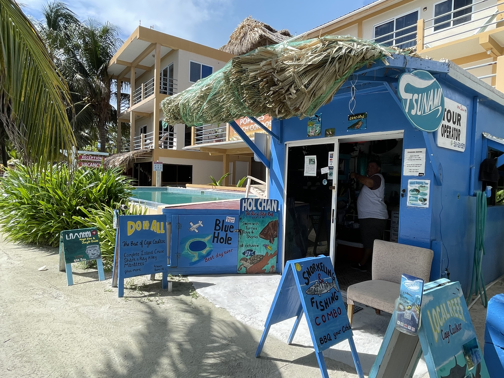
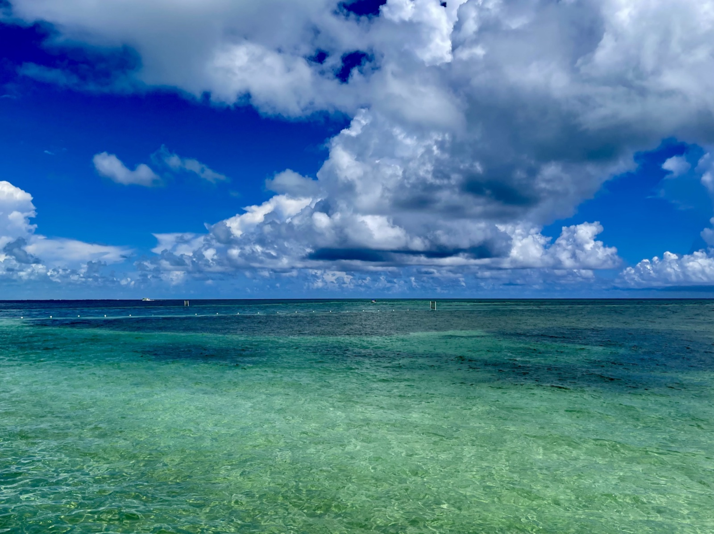
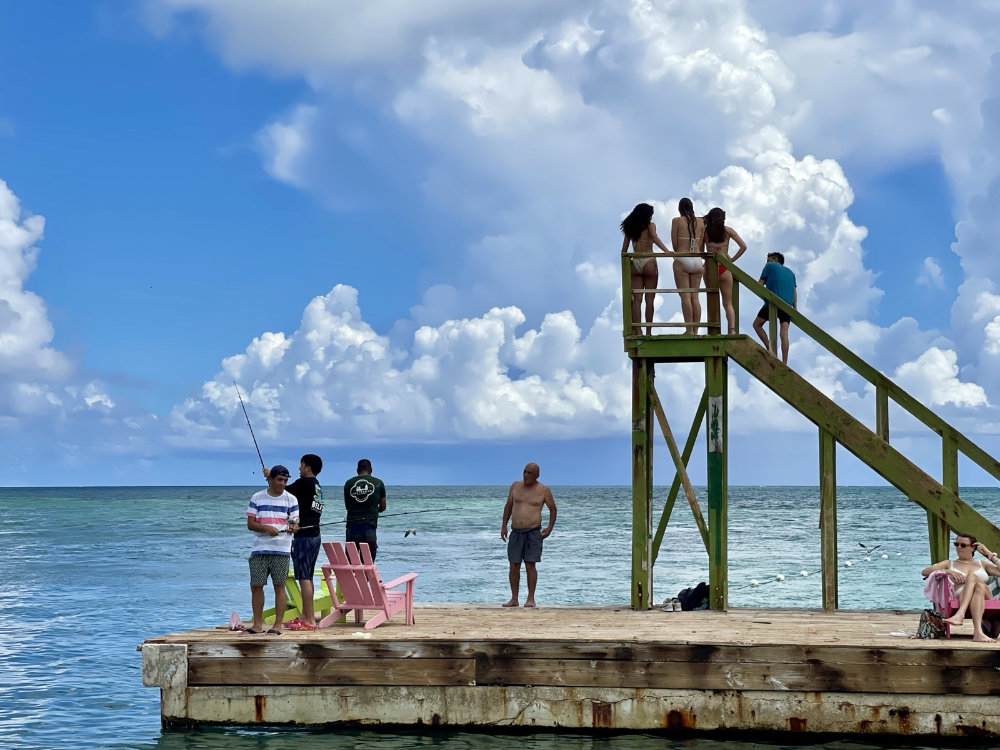
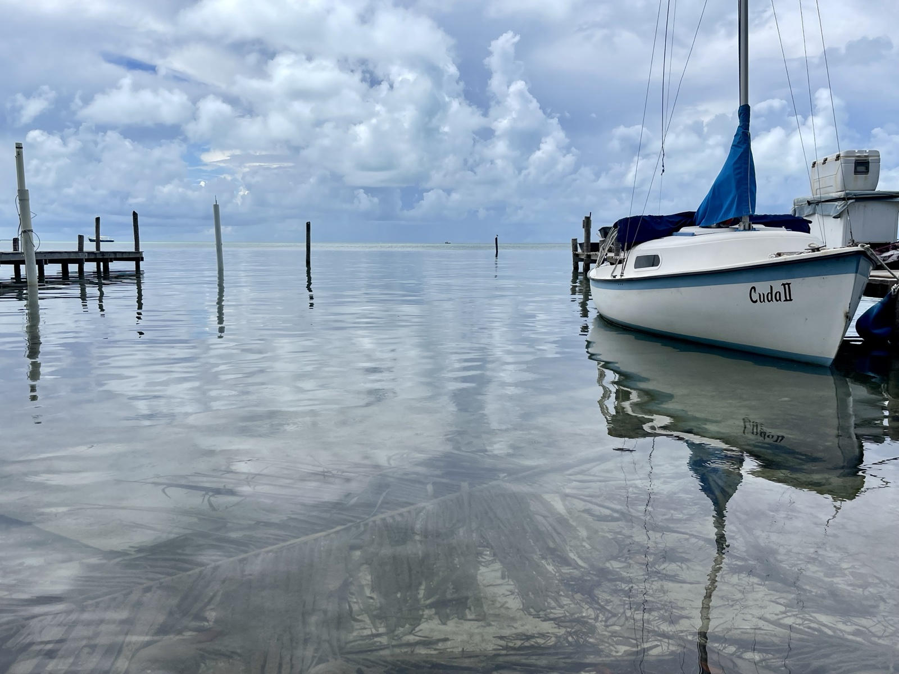
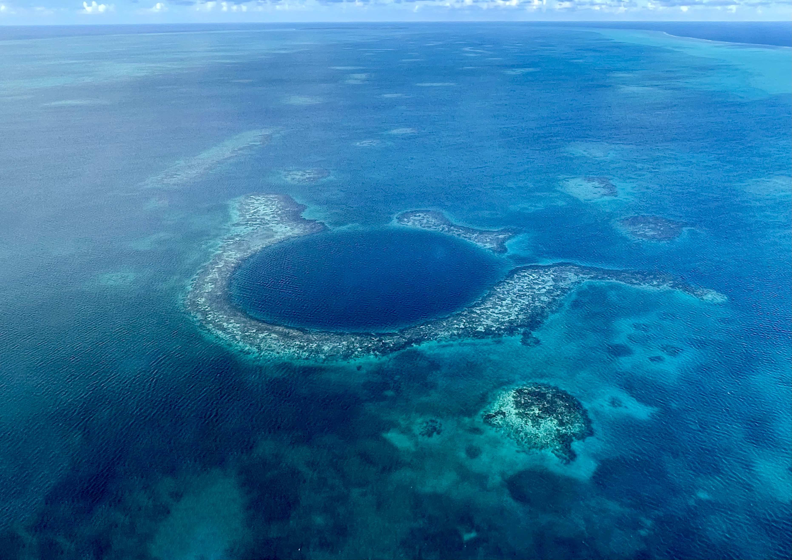
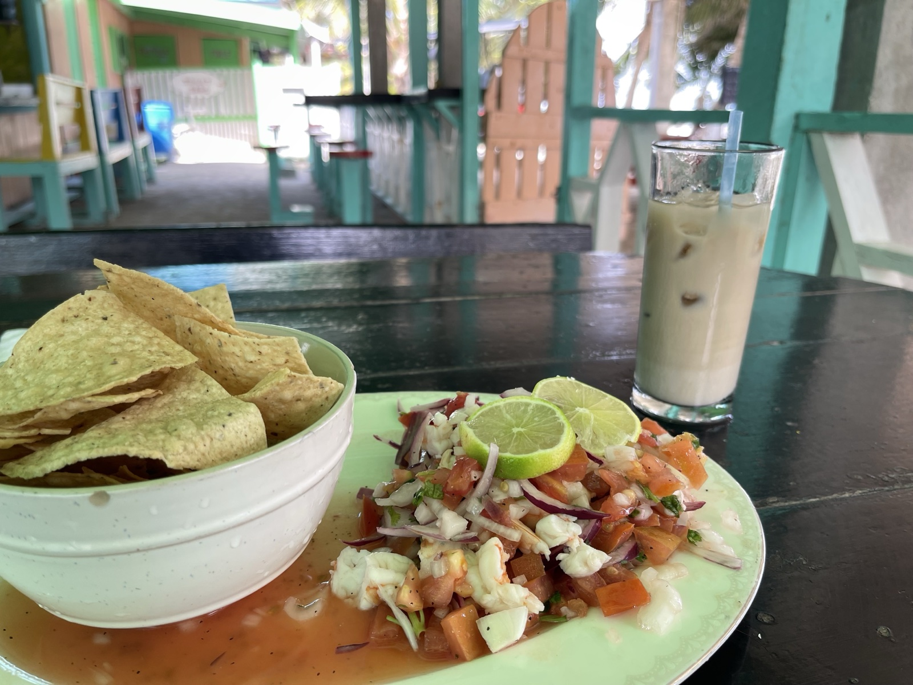

Today I went over to Caye Caulker, a small island in the Caribbean. About 45 minutes southeast of Belize City by water taxi. The island's slogan is "Go Slow" — and that pretty well captures its feel.
Caye Caulker — Caribbean Island Time

Caye Caulker has no cars, no motorcycles. Golf carts run on sandy gravel roads, with brightly painted buildings on either side — that classic Caribbean look. English works fine; the island has plenty of backpackers and travelers from Europe and North America.


The color of the water is just beautiful. Not really one shade of turquoise — more like several blues mixed together. In the shallows you can see the sandy bottom. The barrier reef breaks the open ocean swells offshore, which is why the inside water is so calm and clear.

All kinds of boats were docked at the harbor. From small motorboats to serious sailing yachts. Some are world-circumnavigating sailors stopping in. The whole island feels unhurried; time passes slower.
Great Blue Hole — A World Heritage Site from Above
The most memorable part of this trip was a Cessna scenic flight over the Great Blue Hole. The Great Blue Hole is an underwater cave at Lighthouse Reef off the coast of Belize — a roughly 300 m wide and 125 m deep hole that opens straight down through the sea. From the surface it looks like a deep navy circle floating in the water; from the air, the whole shape becomes obvious at a glance.

I climbed aboard a small Cessna and we flew north along the coastline for about 30 minutes. Then suddenly, in the middle of the bright blue sea, a deep navy circle appeared. The Great Blue Hole. Bigger than I imagined, and bluer. The shape so clean it almost looks artificial.

Around the reef, a few stranded ship wrecks were also visible. The water surrounded by the barrier reef is beautiful, but navigation isn't risk-free. The flight made one circle around the Blue Hole and then turned back. Short, but a sight I'll never forget.
The Blue Hole is also a famous dive site, and you can dive into it. But people who've dived it say underwater you can't actually see the circular shape — the "I'm diving the Blue Hole!" feeling is surprisingly faint. Seeing it from the air gets the "Blue Hole" feeling across better, in their view. Having flown it, I agree.
Getting on the Tsunami Tour — The Island Helped Me Out
There's only one airstrip on the island, but several tour operators (including Tsunami Tour Operator) gather their own customers and run flights. Cost is around USD 250 per person (varies a bit by season), with departures from 3 people minimum, up to 5 people in the same Cessna. Solo travelers can get canceled if there aren't enough people, but if you pay for 3 spots, they'll fly even with one person. Weather can also ground flights, so if you really want to go, build in extra days on the island.
I came to the island without even knowing where to find a Cessna. I asked someone walking down the street, and right there they called to ask if a same-day flight was possible. Another local called another operator, and in the end I negotiated "I'm alone but I'll pay for 3 spots." By departure time we had four people including me, so I only paid for one.
The staff also had multilingual handouts, so it felt safe to join even without strong English. Less like a tourist tour, more like riding along on the island's own help — that was the feeling.
Lunch: Ceviche

Lunch on the island was ceviche. White fish or shrimp marinated in lime juice, a Latin American staple. Belize ceviche has a strong chili kick, balanced by horchata (a sweet rice-based drink). Eating ceviche right next to the Caribbean is something else.